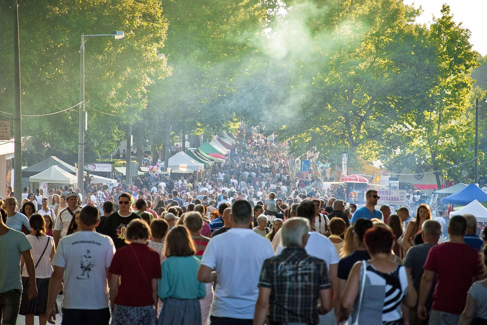
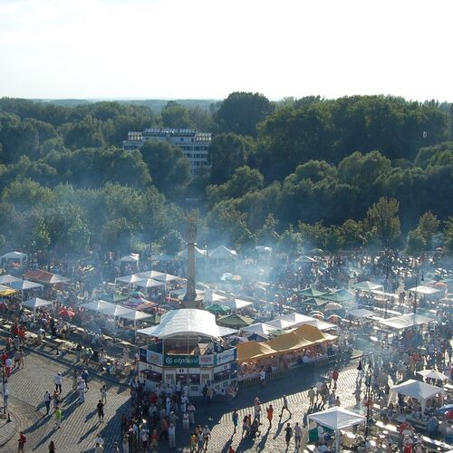

Halászlé fesztivál 2023
Július 6-tól 8-ig
Helyszín
Képek A Halászlé Fesztiválról
Riport A Halászlé Fesztiválról
Zenefeszt Részletek
 
Most komolyan nem megy a videó? Ez egy költői kérdés volt amúgy.
Merülj mélyebre
A forrást keresed? Itt van :D